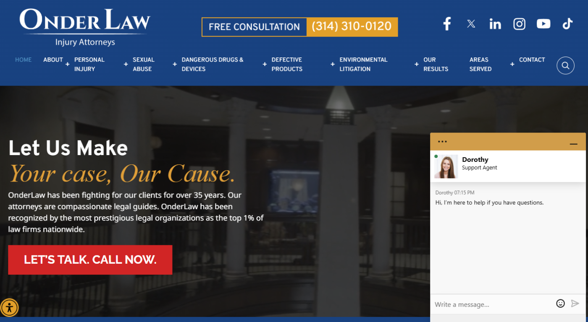
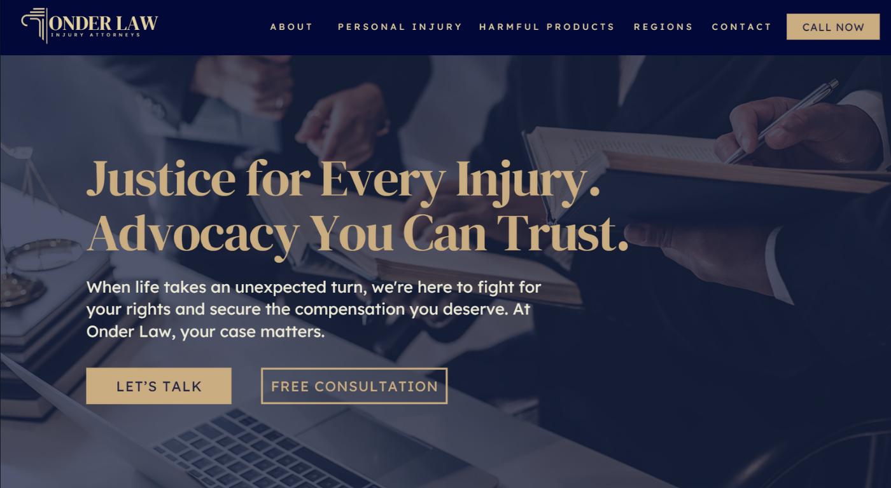
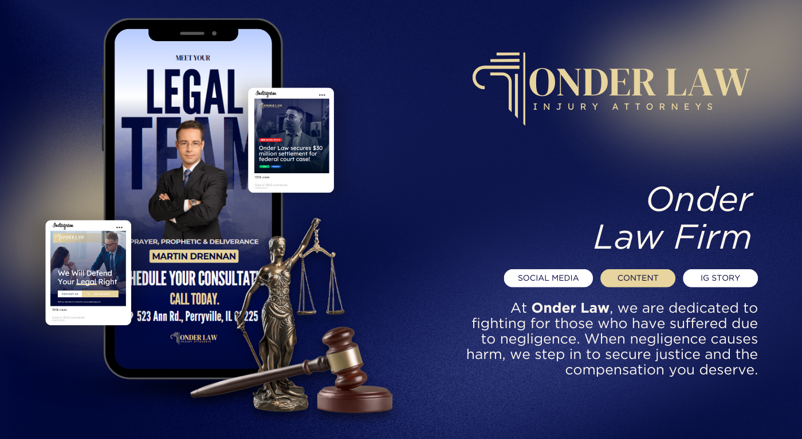
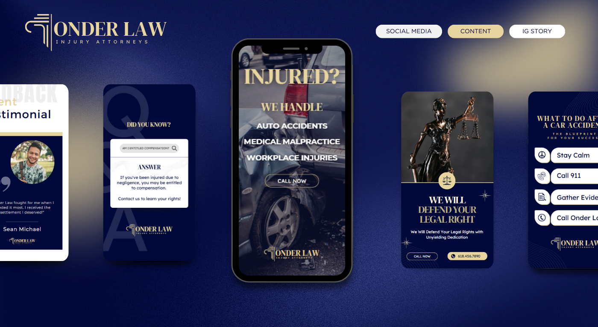

Giving a respected law firm a modern voice and cohesive identity that honors their legacy while emotionally connecting with a new generation of clients.
OnderLaw had a strong reputation but their visual identity hadn't evolved with their audience. Inconsistent branding across web, print, and video was diluting their authority and making it harder to connect with clients emotionally.
I developed a cohesive brand style guide — typography, color, iconography, hero sections, and video thumbnails. New social templates, landing page banners, and homepage visuals were aligned with a narrative of justice and client care.
Identified key values and emotional tone through stakeholder interviews and competitive brand analysis.
Built a refreshed logo system, scalable typography palette, and unified color language.
Created branded layouts for web, social, event collateral, and video thumbnails.
Finalized hero mockups and rolled the brand system out across all channels.




Increase in homepage retention
Unified identity across all platforms